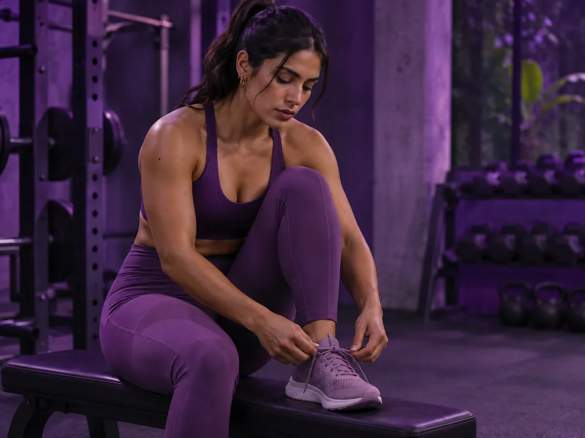
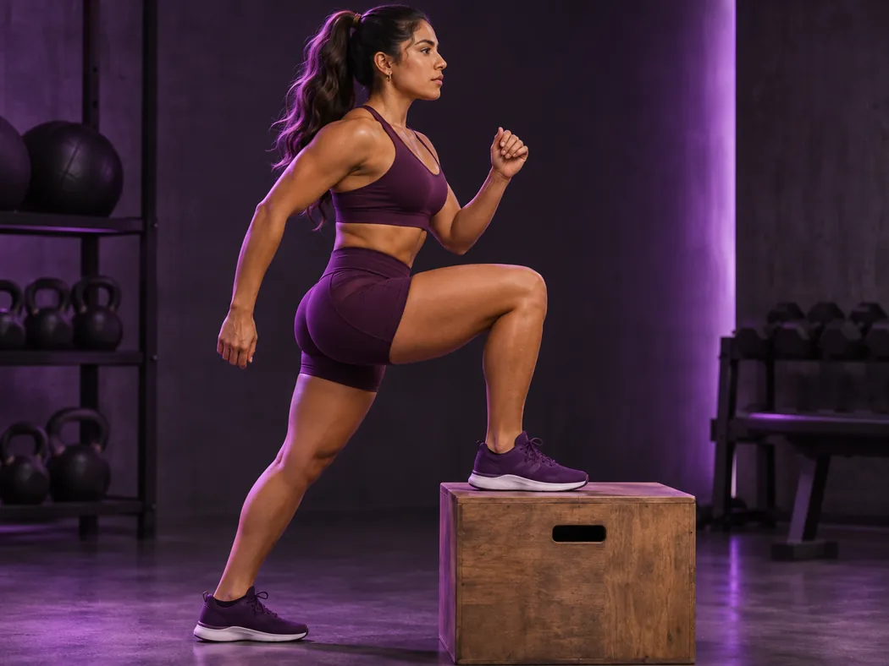

El contexto cambia. La rutina también.
Una atleta llega al gimnasio con menos energía y encuentra que su máquina habitual está ocupada. ¿Cómo decide qué entrenar hoy?

¿Qué cambia hoy?
Pregunta al público qué información usaría para ajustar la rutina. Elige una respuesta para mostrar cómo entra al flujo de SyncFit.
Contexto fisiológicoLa fase del ciclo o la etapa de gestación aporta contexto al generar una propuesta de entrenamiento.
Dos accesos, dos tareas
Abre el entorno de evaluación en dos perfiles del navegador. Usa los accesos rápidos existentes.
Administrador de gimnasio
Abre el panel y elige el gimnasio de prueba.
Atleta
Abre la app y prepara el código para unirte al gimnasio de prueba.
Superadministrador
Ten abierta la sesión de catálogos para el ejercicio del minuto nueve.
Registra una máquina
En el panel del gimnasio, crea una máquina y vincúlala con un ejercicio. Al recargar, el inventario y el contador reflejan el cambio guardado.

Agrega un grupo muscular
Explora cómo una opción de Superadministración llega a la rutina de la atleta.
Crea el grupoEn Catálogos → Opciones, crea un grupo muscular de prueba.
Genera la rutina
Activa el gimnasio de prueba, elige el grupo muscular y registra tu energía. Genera la rutina con telemetría simulada y revisa qué ejercicios, carga y equipo propone SyncFit.
